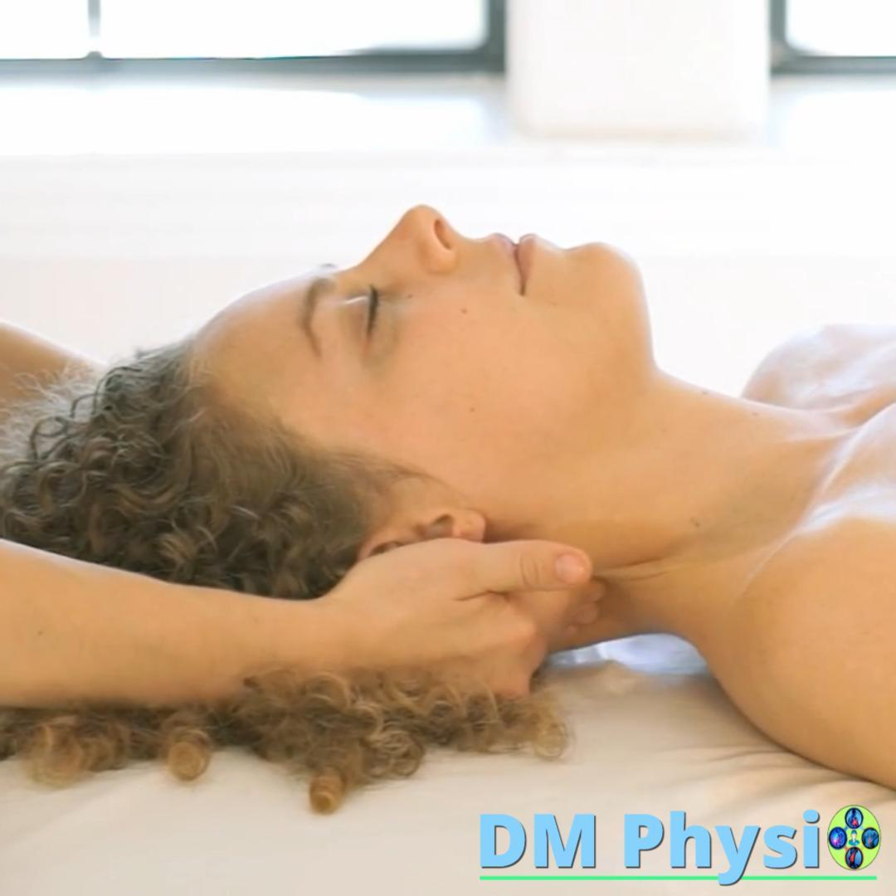

Масаж при главоболие и замайване, свързани с напрежение във врата
Първо установяваме дали вратът участва в симптомите. После работим по конкретния шийно-мускулен модел, който ги поддържа.
Усещате натиск в тила или слепоочията, тежест зад очите, стегнат врат, повдигнати рамене или замайване при движение на главата?
При част от хората тези оплаквания се поддържат от напрежение, ограничено движение и претоварване в областта на врата, тила, раменете и челюстта.
В DM Physio не масажираме само мястото, което боли. Първо проверяваме дали симптомите са свързани с движението на врата, стойката и чувствителните мускулни зони. Когато оценката показва такъв модел, работим целенасочено по шийно-мускулния компонент.
Не масажираме симптома на сляпо
Главоболието, замайването и световъртежът не са една диагноза. Те могат да имат различни причини, затова правилната първа стъпка е да установим дали вратът реално участва в проблема.

Продължаваме само при ясен шийно-мускулен модел
Свързваме симптома с движението на врата, стойката, ежедневното натоварване и чувствителните мускулни зони. Масажът е подходящ, когато няколко признака сочат в една и съща посока.
- Главоболието върви заедно със скованост, болка или ограничено движение във врата.
- Натискът в тила, слепоочията или зад очите се променя при движение на главата.
- Седене, работа пред екран, стискане на зъби или повдигнато рамо поддържат оплакванията.
- Натиск върху конкретна мускулна зона възпроизвежда познатата болка.
- След целенасочена работа движението и симптомът се променят в една и съща посока.
Когато този модел липсва, не повтаряме масаж на сляпо. Насочваме към правилната следваща стъпка.
Главоболие от врата: кои зони проверяваме?
Не търсим един „виновен“ мускул. Проверяваме как работят вратът, раменният пояс и челюстта като система и свързваме картата на болката с движение, навици и реакция след работа.

Врат, раменен пояс и челюст
Самата карта на болката не е достатъчна. Затова проверяваме зоните като система и свързваме усещането с движение, навици, чувствителност на тъканите и реакция след работа.
- Мускулите под тила при натиск ниско под черепа, тилна болка и тежест зад очите.
- Горният трапец и зоната около лопатките при линия на напрежение от рамото през врата към главата.
- SCM — големият страничен мускул на врата при болка зад ухото, в слепоочието и челото.
- Temporalis и masseter при стискане на зъби, напрежение в челюстта и болка в слепоочията.
Замайване и световъртеж не са едно и също
При замайване с болка, скованост и ограничено движение във врата оценяваме дали шията участва в симптома. При истински световъртеж първата стъпка е медицинска или вестибуларна оценка.

Как описвате усещането?
Замайването често се описва като нестабилност, „люлеене“, тежка глава или усещане, че не сте напълно стабилни при движение.
Световъртежът е ясно усещане, че вие или пространството около вас се въртите.
- При замайване с болка, скованост и ограничено движение оценяваме шийно-мускулния компонент.
- Когато той е налице, работим с масаж, движение и конкретни промени в ежедневното натоварване.
- При истински световъртеж не започваме с масаж. Това важи особено при гадене, шум в ушите, промяна в слуха или внезапна нестабилност.
Как протича процедурата?
Сесията включва функционална проверка, целенасочен масаж и повторна оценка. Така виждаме не само дали тъканите са по-спокойни, а и дали движението и конкретният симптом се променят.
Оценка, целенасочен масаж и ясен план
1 Функционална оценка 10–15 минути
Уточняваме как започва симптомът, какво го провокира и как се променя при движение.
- Проверяваме активното движение на врата.
- Оценяваме тила, SCM, горния трапец, зоната около лопатките и челюстта.
- Свързваме стойката и работната позиция със симптомите.
- Решаваме дали масажът е подходящата и безопасна следваща стъпка.
2 Целенасочен масаж 45–50 минути
Работим върху установените напрегнати зони в горната част на гърба, раменете, врата, тила и при нужда челюстта.
Натискът се съобразява с вашата чувствителност. Не използваме резки или силови манипулации на врата.
3 Повторна проверка и ясен план
След масажа отново проверяваме движението и симптома. Получавате конкретни насоки за:
- позицията на главата, раменете и работното място;
- паузи при работа пред екран;
- движение и упражнения според вашия модел;
- навици като стискане на зъби, повдигнато рамо или мишка далеч от тялото.
Кога не правим масаж?
Не запазвайте масаж и потърсете спешна медицинска помощ при:
- внезапно, изключително силно главоболие;
- затруднен говор, обърканост, припадък или невъзможност да стоите стабилно;
- двойно виждане, внезапна загуба на зрение или слух;
- силно главоболие след травма на главата;
- висока температура със скован врат;
- внезапен световъртеж с нови неврологични симптоми.
При тези симптоми не чакайте процедура — потърсете спешна оценка.
Цена и продължителност
60 минути · 50 евро
Процедурата включва кратка функционална оценка, целенасочен масаж и повторна проверка на движението.
Разберете по-точно оплакването
Преди да изберете процедура, вижте какво може да стои зад световъртежа и замайването, болката в слепоочието, тилното главоболие или мускулното напрежение във врата.
Последна актуализация: август 2026 г.
Често задавани въпроси
Помага ли масажът при главоболие?
Когато главоболието има установен шийно-мускулен компонент, масажът се използва за намаляване на напрежението и чувствителността в конкретните зони. За по-устойчива промяна го комбинираме с възстановяване на движението и промяна на натоварването, което поддържа проблема.
Правите ли масаж при световъртеж?
Не използваме масажа като първа стъпка при истински световъртеж. При замайване, свързано с напрежение и ограничено движение във врата, оценяваме шийно-мускулния компонент и работим по него, когато това е подходящо.
Колко процедури са нужни?
Броят процедури се определя след оценката. Не работим с фиксирани пакети на сляпо. Следим дали се променят симптомът, движението и факторите, които го поддържат.
Как протича процедурата и болезнена ли е?
Сесията започва с кратък разговор и проверка на движенията. Натискът е дозиран и се променя според усещането ви. Не се прилагат резки или силови манипулации на врата.
Кога първо трябва да потърся лекар?
Потърсете спешна медицинска помощ при внезапно и много силно главоболие, затруднен говор, двойно или загубено зрение, припадък, обърканост, силна нестабилност, висока температура със скован врат или симптоми след травма на главата.
Как да избера между масаж и функционална оценка?
Ако причината не е ясна, симптомите се повтарят или световъртежът е водещото оплакване, започнете с функционална оценка. Така избираме безопасната следваща стъпка, вместо процедура на сляпо.